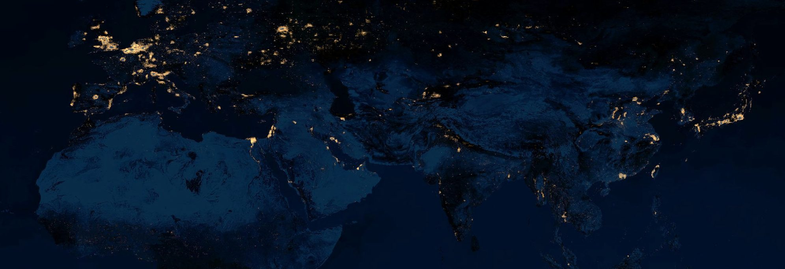

The world's open data
Ask Data AI anything, by typing or by voice, and get the number with its year and its source. Or take a whole dataset, shape it and download it. No scraping, no cleaning, no sign-up.
Four ways to use it
Start with the one that matches what you came for. The guide walks through each of them with examples.
Ask Data AI
Chat by typing or by voice. You get the answer with its year and its source, a chart or a map when you ask for one, and a plain explanation when you ask why.
Ask Data AITake a dataset
Choose the variables, places and years. Check the table and the chart. Download CSV, Excel or JSON.
Browse the datasetsTest an idea
State a hypothesis. Get the right test with the reasons for it, then the result in plain words with charts.
Open Researcher modeAnalyse your own file
Open a CSV, Excel, JSON, Parquet, SPSS or Stata file. It is read in your browser and never uploaded.
Open a fileDatasets
Take a whole dataset in one click, or customize it first. See every variable in one list.
The world at a glance
The latest year with wide coverage, country by country. Hover for the number, click a country to open its data.

The world this year
Running estimates. Each one takes the latest full-year figure and spreads it evenly across the year.
The world in six charts
Drawn from the datasets above. Pick one, or let them play.
Kept fresh
Every source is checked once a day, and each check records exactly what changed. Earthquakes on the globe above come straight from the US Geological Survey, minute by minute.